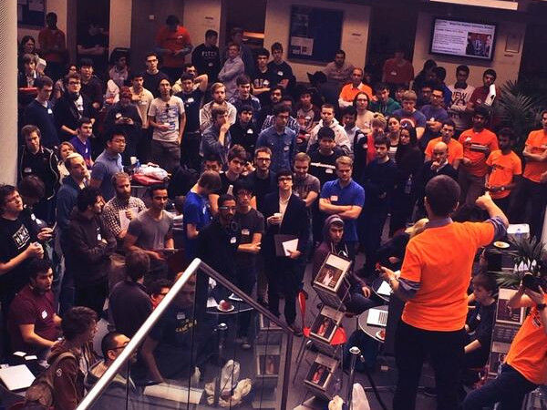

<section data-anchor="history" class="section darkSection darkSection"><div class="pure-g-r"><div class="pure-u-2-3 center text"><h1>History</h1><p>Imperial College Hackathon is an annual event held during the spring term. It has started as a way for Computing students to devote a weekend to hacking on ideas which they don't have the time for during the term. Each year has surpassed the previous one in the number of students participating and now IC Hack has grown into a college-wide event, incorporating developers from across the department, industry sponsors and top mentors who help kick off the event and guide teams through technical challenges.</p><div class="pure-g-r"><div class="pure-u-1-2"><div class="history-image"></div></div><div class="pure-u-1-2"><div class="history-image"></div></div></div><p>The event consists of the usual frenzied hacking and culminates in a demo session presided over by our panel of expert judges from relevant fields and sponsoring companies. Teams pitch their ideas from the solid, well designed and practical hacks, to the world changing and super-cool demos which cause that audible intake of breath we all crave. Everyone's hacks have always been warmly welcome and we're confident nothing's going to change in that respect.</p></div></div></section>